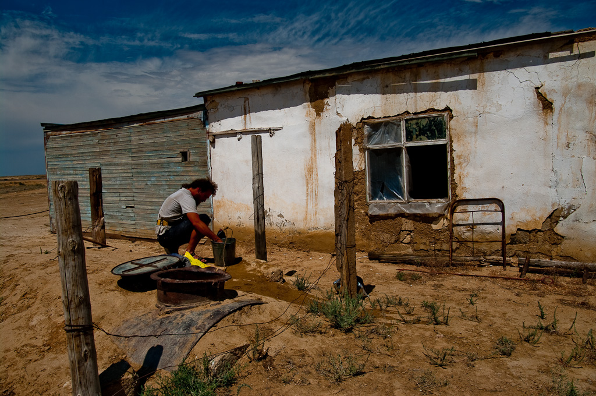
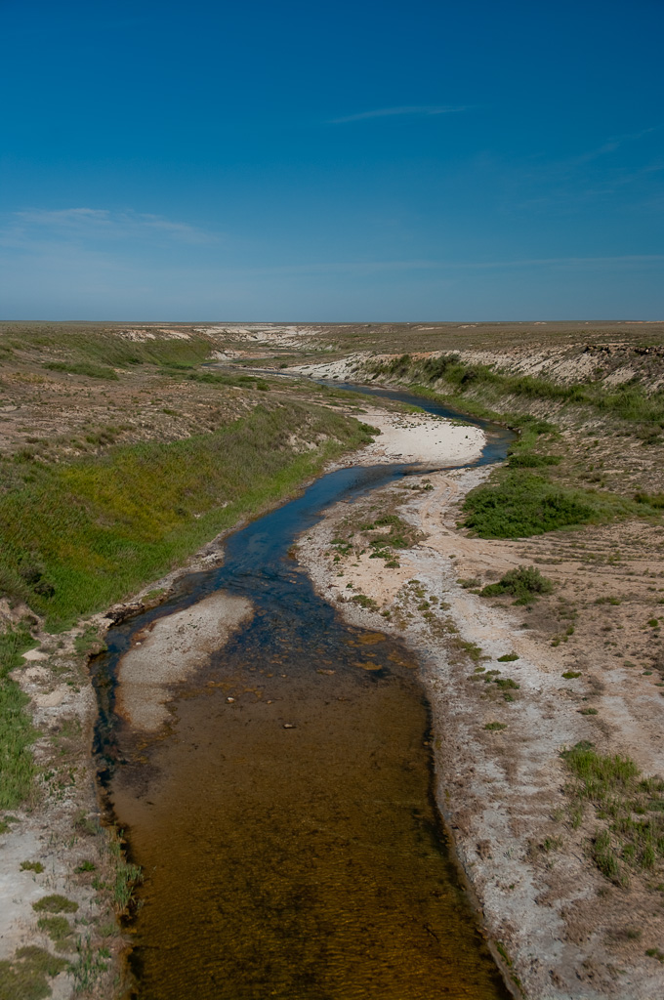

Comment traverser les steppes arides à pied?
Le Kazakhstan est un territoire immense, principalement constitué de steppes où les cours d’eau sont extrêmement rares. De plus, les cours d’eau ou les mare que l’on peut trouver, dans la region du Mangghystau sont, fortement chargées en sel, les rendant impropre à la consommation si bien que dans cette region les villages sont approvisionnés en eau potable par convois ferroviaires. Il convient donc d’être prudent lorsqu’on se lance dans une traversée de plusieurs semaine d’une telle région.
La solution que nous avons choisi a été de suivre le chemin de fer. Bien qu’éloignée de la route principal, la voie ferrée a été régulièrement ponctuée de petites gares appelées « raziest »,environ tout les 20/25km. Principalement dédiées à la maintenance et à l’aiguillage des trains. Ces petites gares sont presque toujours occupées par au moins un employé qui dispose d’une réserve d’eau et accessoirement d’une prise électrique.
Parfois même, les « raziests » disposent d’une cuve d’eau plus ou moins propre remplie régulièrement par les trains qui, moyennant quelques dizaines de minutes de communication avec l’employé, permet d’improviser une toilette souvent bien apprécier pendant les mois caniculaires de l’été.
L’autre solution consiste à suivre les cours d’eau, mais attention : beaucoup de petites rivières s’assèchent en été. Les deux cours d’eau que nous avons suivi sont la rivière « Jem » (aussi appelée « Emba ») et le Syr Daria. Nous avons bu les eaux de ces deux cours d’eau après filtration et cuisiné avec elle sans ressentir de problèmes sanitaires particuliers.
L’eau de la « Jem » et toutefois légèrement salée sur toute la moitié Ouest de son cours. La teneur en sel est moins importante que dans la mer ou dans les mares que nous avons croisé par le passé et permet de s’hydrater, mais le goût du sel persistant dans la bouche provoque une sensation de soif permanente assez difficile à supporter.

Le Syr-daria quant à lui est très souvent divisés en de multiples canaux d’irrigation résultant de l’ancienne monoculture du coton pratiquée sur ses rives à l’époque soviétique. Bien que la culture du coton soit bien moindre aujourd’hui, les canaux n’ont été que partiellement asséchés et beaucoup se terminent en bras morts d’eau stagnante. Il est sans doutes préférable de puiser de l’eau dans le cours principal du fleuve qui conserve toujours des rives sauvage. Son eau est néanmoins très boueuse et les filtres s’encrassent assez rapidement. Mieux vaut laisser décanter l’eau dans la mesure du possible ou la puiser au milieux des vastes colonies de roseaux qui poussent un peu partout sur ses rives. L’eau est alors naturellement décantée, mais son goût de vase est nettement plus prononcé que si on la puise dans le cours principal.